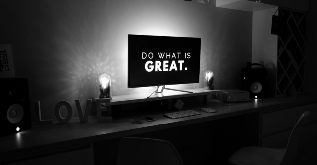

<section class="success-cases">
  <div class="center">
    <div class="w-full">
      <div class="top__side">
        <span class="__title">Success <strong>Cases</strong></span>
        <ul class="cases__filters">
          <li
            (click)="onClickFilter('all')"
            [ngClass]="{ active: activeFilter === 'all' }"
            class="__list active"
          >
            all
          </li>
          <li
            (click)="onClickFilter(item.name)"
            [ngClass]="{ active: activeFilter === item.name }"
            *ngFor="let item of services"
            class="__list"
          >
            {{ item.name }}
          </li>
        </ul>
      </div>
      <div
        class="cases__list flex gap-x-16"
        *ngFor="let item of listArray; let i = index"
      >
        <div class="__left w-full">
          
        </div>

        <div class="__right w-full">
          <div class="__top flex justify-between w-full">
            <span class="__text">0{{ i + 1 }} Samsung Rebranding Case</span>
            <span class="__view flex items-center" [routerLink]="[ '/success-case', i+1 ]">
              view
              
            </span>
          </div>
          <span class="__subtext"
            >When you run your hand along the weathered, amber-hued wooden
            pillars or when you're enveloped in the delightful scent of wooden
            structures, have you ever considered the mountains where the trees
            grew?</span
          >
        </div>
      </div>
    </div>
  </div>
</section>
